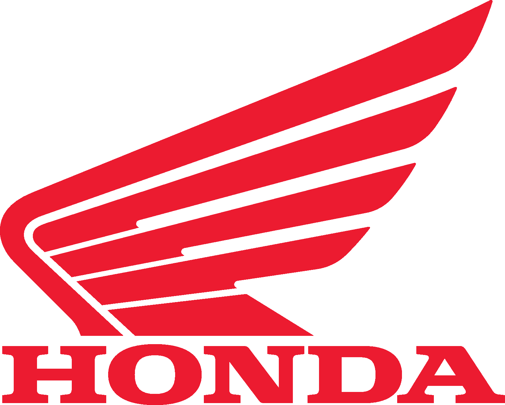

Добро пожаловать!
Honda Motor Co., Ltd. (яп. 本田技研工業株式会社 хонда гикэн ко:гё кабусики гайся) - японская публичная многонациональная корпорация, основанная в 1948 году изобретателем и предпринимателем Соитиро Хондой и финансистом Такэо Фудзисавой, известная прежде всего как производитель автомобилей, мотоциклов и силового оборудования.
Honda является крупнейшим производителем мотоциклов в мире с 1959 года, достигнув 400 миллионов произведённых мотоциклов к концу 2019, а также крупнейший в мире производитель двигателей внутреннего сгорания, производящий более 14 миллионов двигателей внутреннего сгорания ежегодно. В 2001 году Honda стала вторым по величине японским производителем автомобилей. В 2015 году Honda была восьмым по величине производителем автомобилей в мире.
Honda была первым японским производителем автомобилей, выпустившим в 1986 году специальный люксовый бренд — Acura. Помимо основного автомобильного и мотоциклетного бизнеса, Honda также производит садовое оборудование, лодочные двигатели, гидроциклы и генераторы, а также другую продукцию. С 1986 года Honda занимается исследованиями в области искусственного интеллекта и робототехники и в 2000 году выпустила своего робота ASIMO. Они также занялись аэрокосмической отраслью, основав GE Honda Aero Engines 2004, компания представила Honda HA-420 HondaJet в 2012 году. У Honda есть три совместных предприятия в Китае: Honda China, Dongfeng Honda и Guangqi Honda.
В 2013 году Honda инвестировала около 5,7% (6,8 млрд долларов США) своей выручки в исследования и разработки. Также в 2013 году Honda стала первым японским автопроизводителем, который стал нетто-экспортером из США, экспортировав 108 705 моделей Honda и Acura, а импортировав только 88 357.
Основные производственные мощности расположены в Японии, США, Индии и Бразилии, основные рынки сбыта — США и юго-восточная Азия. Девиз компании - "The Power of Dreams" ("Сила воображения")